About Ferry Irwan
Computer Science student passionate about mobile engineering, backend architecture, and building production-ready applications. Here is a visual snapshot of my academic journey, awards, and campus life at Kolej Profesional MARA Beranang (KPMB).
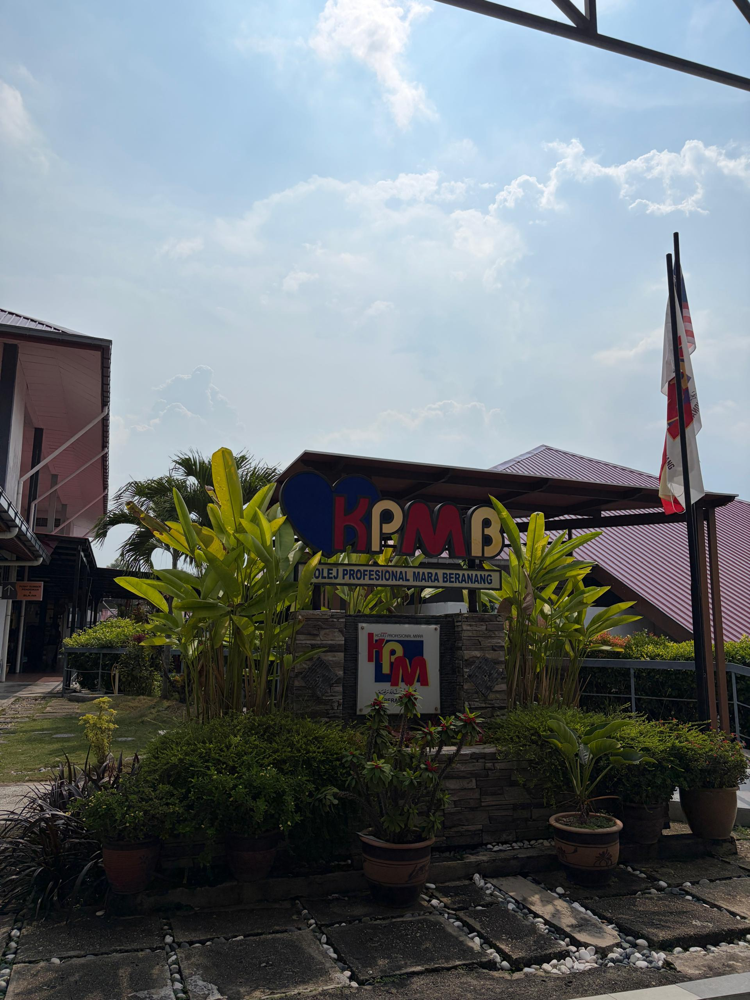
College Outstanding Performance Award (Anugerah Cemerlang Kolej)
Awarded by Kolej Profesional MARA Beranang for academic excellence and semester distinction.
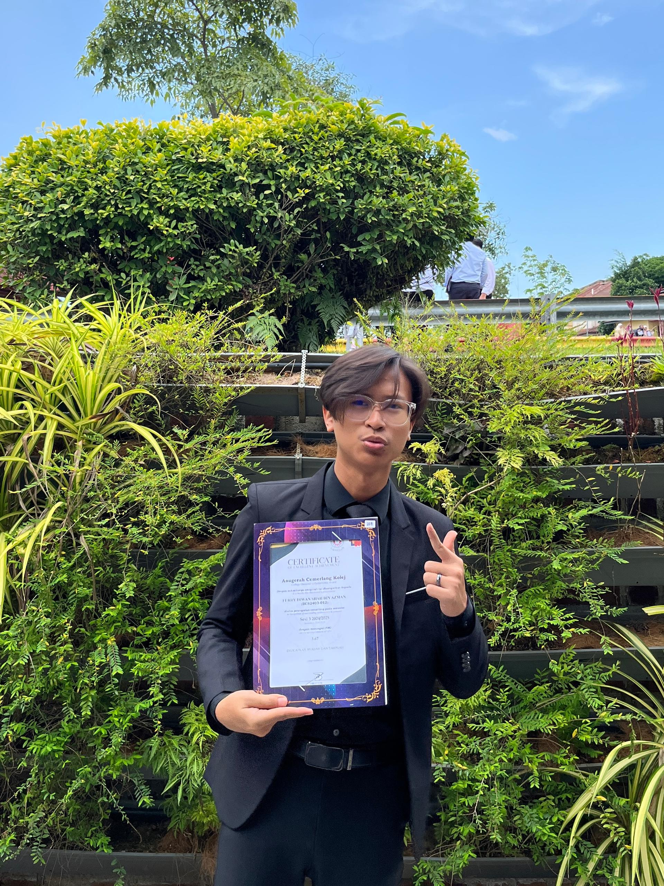
Official College Outstanding Performance Award Presentation · Session 3
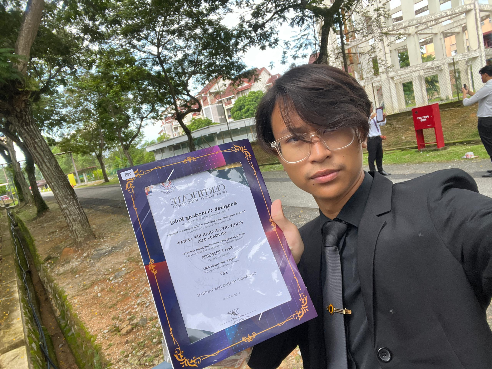
Celebrated at Kolej Profesional MARA Beranang campus
Orientation Committee (OC Club)
Active committee member serving as Program Bureau Member in the Orientation Committee (OC) Club at Kolej Profesional MARA Beranang. Responsible for event scheduling, coordinating interactive modules, and facilitating the intake of hundreds of new incoming students throughout Orientation Week (Minggu Sua Kenal - MSK).
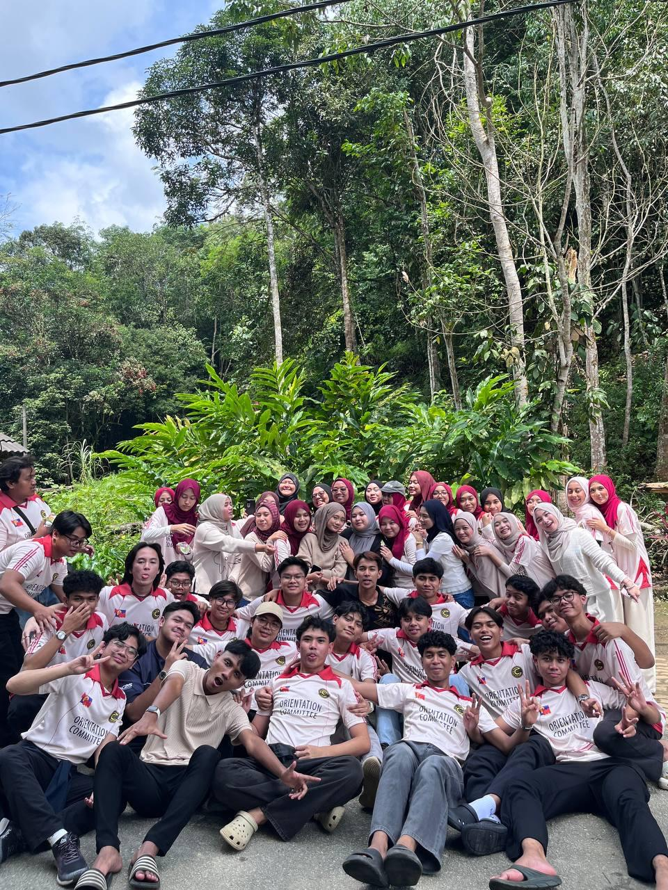
Committee Members & Student Facilitators · OC Club KPM Beranang
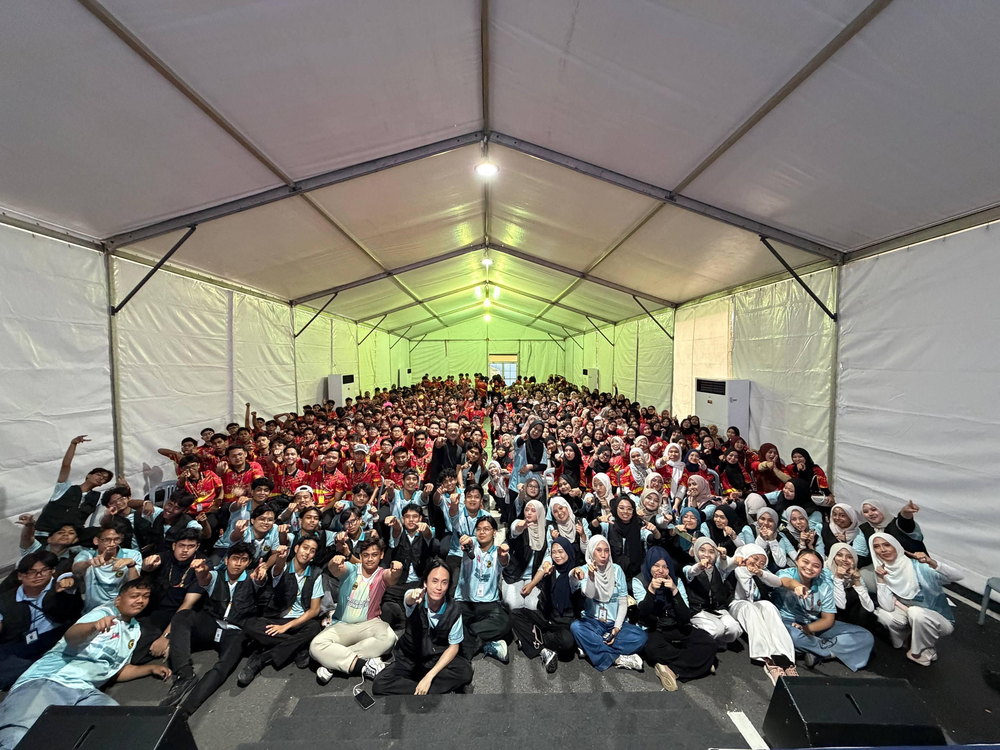
Assembly hall gathering and student welcoming ceremony at KPM Beranang
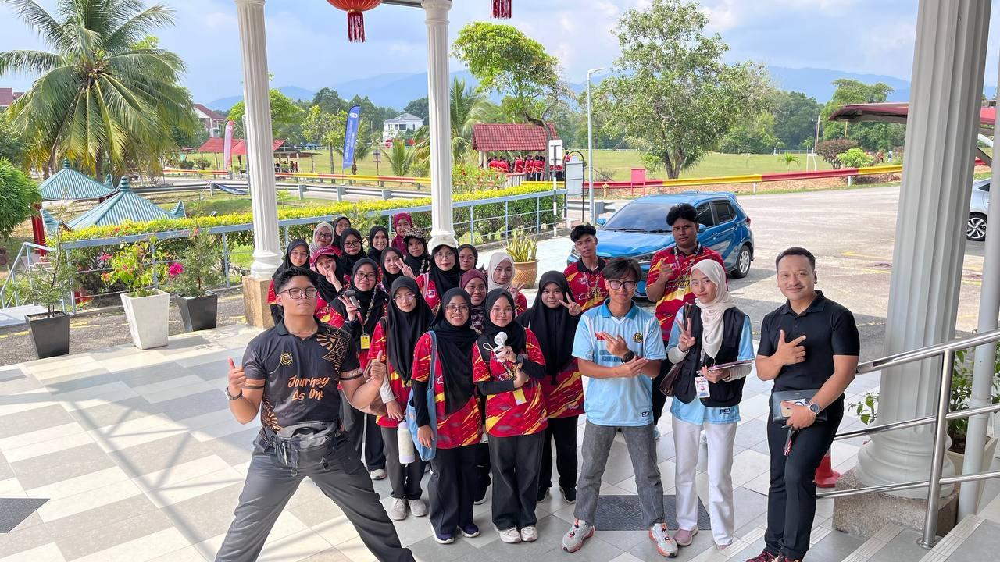
Engaging campus exploration and mentorship sessions with groups of new students
CSR Program: Tadika Little Caliphs
Executed a Corporate Social Responsibility (CSR) project for the Semester 6 curriculum at Tadika Little Caliphs, Bandar Tasik Kesuma. Led the committee as Head of Program Bureau—designing the comprehensive itinerary, emceeing the ceremony, and directing sports day games and interactive learning modules for kindergarten pupils.
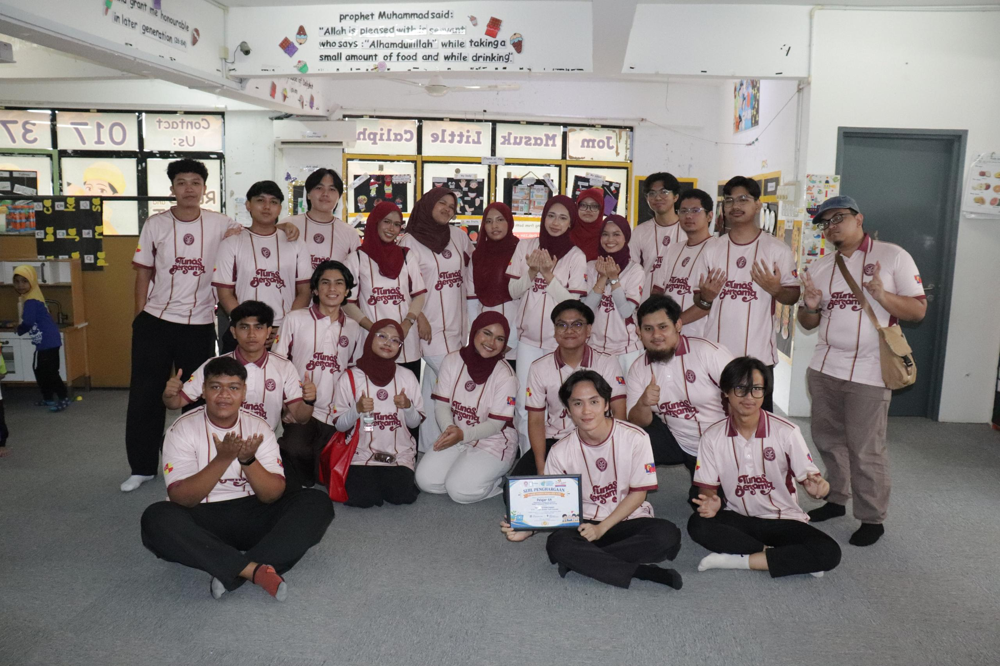
Full Semester 6 CSR project committee with the official Certificate of Appreciation
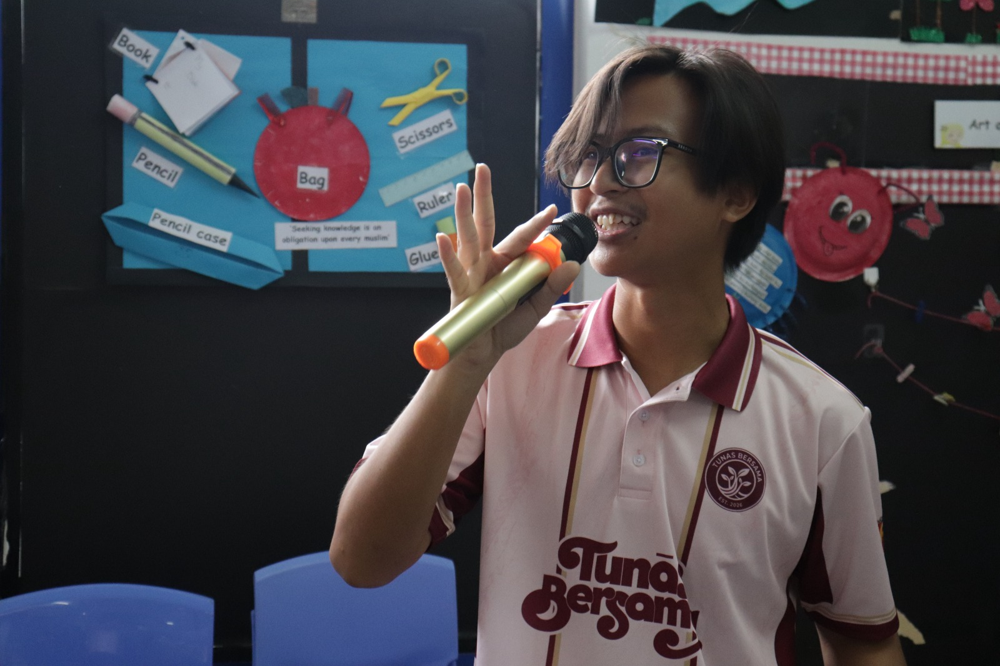
Directing interactive activities on the microphone as Head of Program Bureau
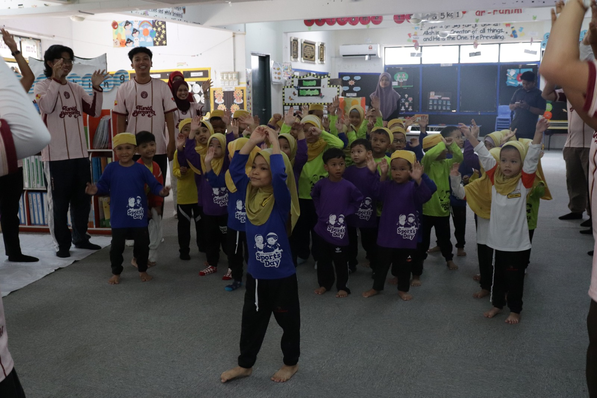
Enthusiastic kindergarten students engaging in aerobic warm-ups and fun sports day games
CAMPUS LIFE & TEAMWORK
Cohort, Projects & Campus Journey
Collaborative learning, practical software assignments, and technical presentations at KPM Beranang.
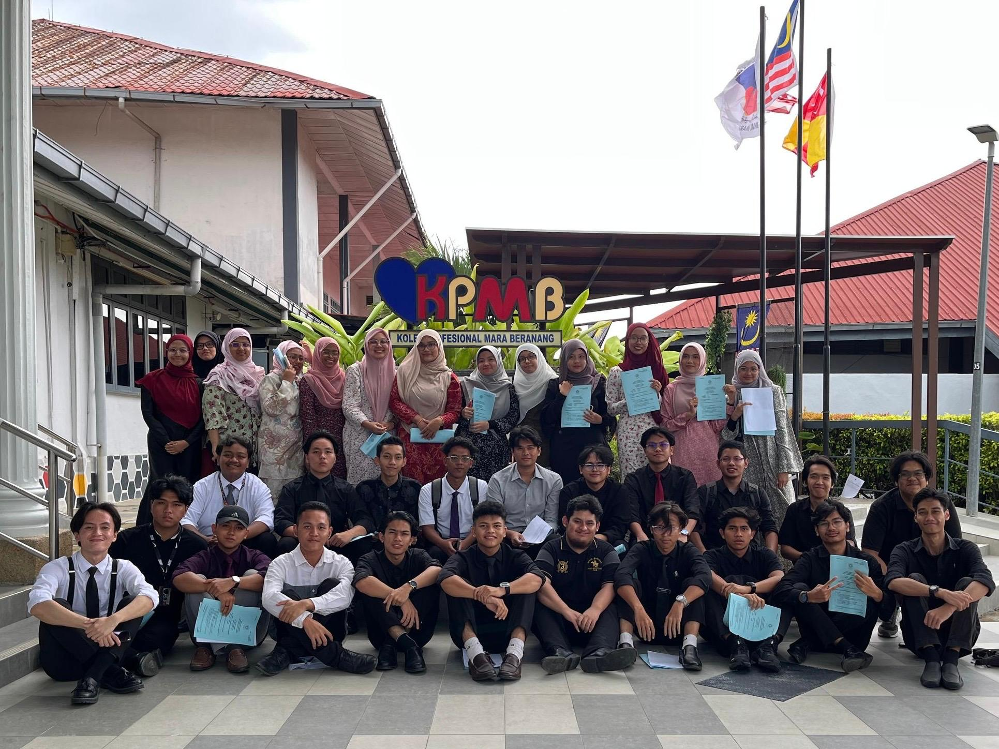
Computer Science Classmates & Peer Collaboration
Strong teamwork and shared learning with fellow Computer Science peers at KPMB—collaborating across labs, academic milestones, and coding challenges.
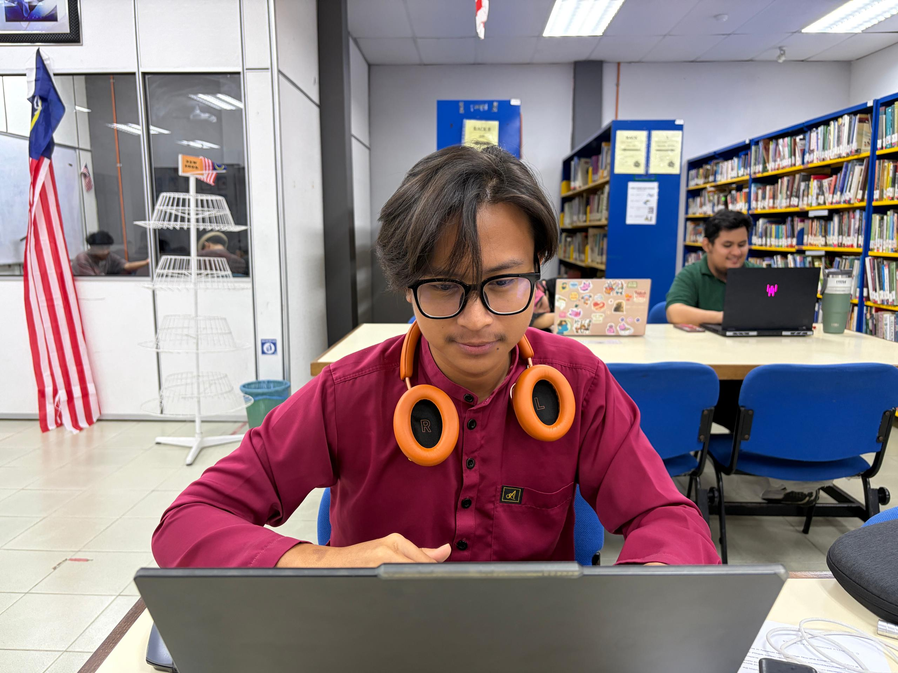
Hands-on Assignment Development
In the zone building software assignments, testing modules, and refining architectural logic with discipline.
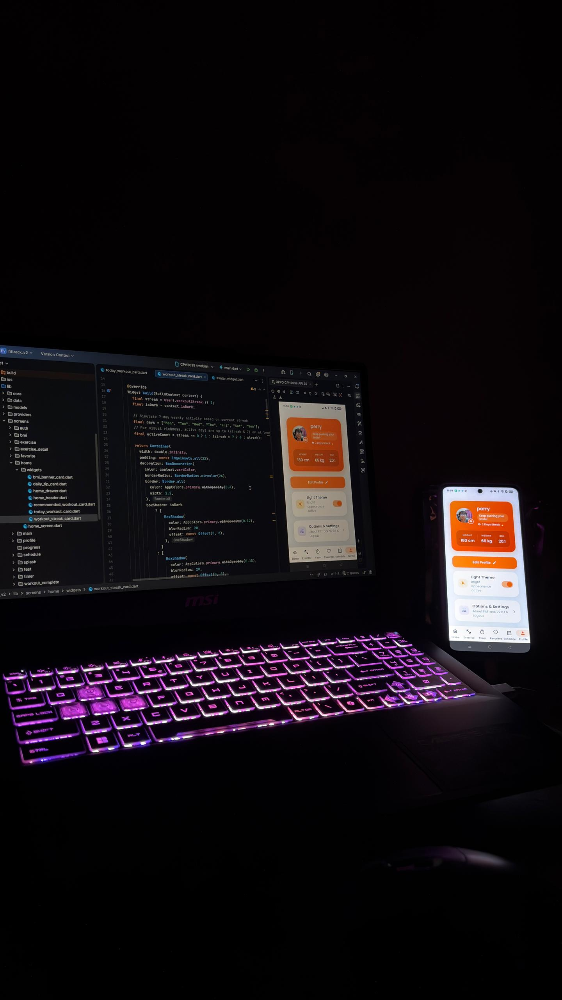
Live Device Mobile Testing
Cross-platform mobile engineering with Android Studio, Flutter framework, and real-time physical device debugging.
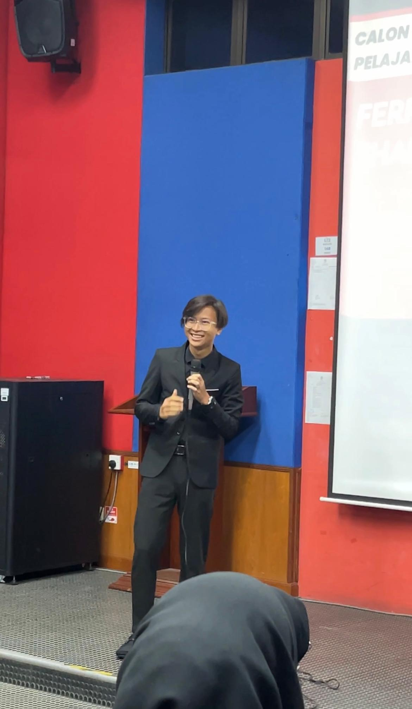
Stage Presentation & Technical Communication
Confident public communication—pitching ideas, delivering project walkthroughs, and articulating complex technical solutions with clarity before lecturers and peers at KPM Beranang.
DEVELOPER DOSSIER
Professional Snapshot
Clean specs and core capabilities for prospective employers and internship teams.

QUICK SUMMARY
Ready to Contribute From Day One
Equipped with rigorous computer science coursework, proven semester excellence (Award recipient), and hands-on project experience in mobile apps, full-stack web platforms, and distributed systems.